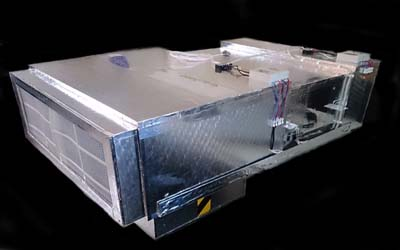
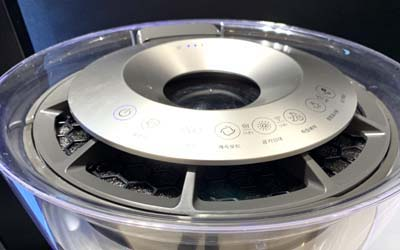
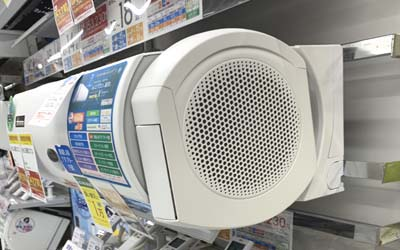

如何選購空氣清淨機裝置
清淨技術
每一處之室內空調及通風設計、污染源、潔淨度...等不同，最好是能夠針對其裝潢予以事前規畫，才能達到高標清淨效果，室內空氣要良好，則細菌感染率會降低，懸浮微粒PM2.5或是甲醛均可有效控制，因此選擇清淨機時，要了解本身室內環境，可能哪些(汙染)問題多，再考慮選購最適合自己之機種。


空調清淨系統
中央空調系統：以一般其室內機為主要循環，以及外氣引入，大都在主機上有濾網，過濾PM10以上之灰塵為主，而使用吊隱式送風機，因受限於本體機型限制，因此只能在其初級濾網上加裝薄型化活性碳濾網，或是抗菌活性碳濾網，此濾網使用期限以開機時數作為計算，大約300-1000小時就必須更換，更換頻率是要視其室內汙染程度以及使用濾網之等級而定。
又因分離式冷氣，因關閉時，受熱空氣影響，在出風口處較潮濕，常常有黴菌產生，導致吹出的風有霉味，故關閉前建議開一小時送風使其乾燥為佳。

獨立清淨系統
有分為天花板型以及室內落地窗型，前者為專業用；後者大多為消費型產品。
如果要選擇家用(消費型)空氣清淨機，請點選"空氣清淨機選擇"。在選購時，不要沉迷最新機種、最昂貴，就一定是最好，往往最新機種都是老酒新瓶，再加上一些智能控制，其實許多智能控制是不需要，甚至許多感應器都只是虛構，根本不準，加上廠商往往會使用網紅在網路發表開箱文，使用華麗廣告用語，使得消費者盲目選購、荷包失血。

換氣安全確效
高危險區之換氣之安全確效
1.煙霧測試：使用煙霧進行目測管道是否有洩陋。
2.各室之正負壓之檢查，以及風管風壓測試。
3.生物櫃單獨測試系統。
4.HEPA等過濾器測試。
5.緊急電力及方案測試。
換過濾網之危險性：過濾網是藏最多細菌之處，由其在醫院內，因此更換有極大之風險性，主要在於細菌及pm2.5粉塵，除對本身之危害也會造成二次公害之風險，因此在更風險區可在過濾設備端特殊設計處理。
| 場所 | 換氣率 | 外氣需求(立方呎/每分鐘) | 外氣:供氣比 |
|---|---|---|---|
| 辦公室 | 4-10 | 20 | NA |
| 教室 | 6-20 | 15 | NA |
| 大廳 | 4-15 | 15 | NA |
| 餐廳 | 12-15 | 12 | NA |
| 醫院病房 | 4 | NA | 1:3 |
| 感染病房 | 6 | NA | 1:3 |
| 隔離病房 | 15 | NA | 1:3 |
| 生化實驗室 | 6-10 | NA | 1:3 |